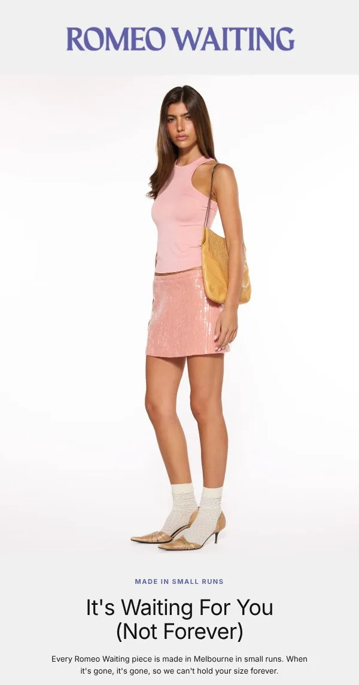
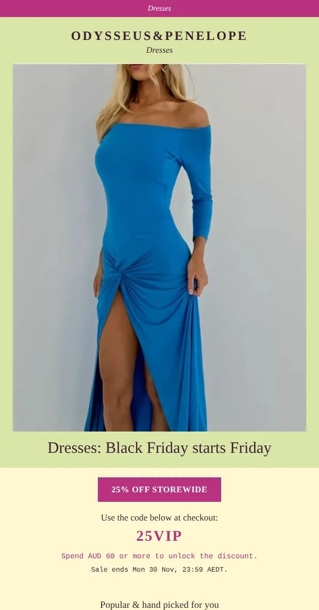
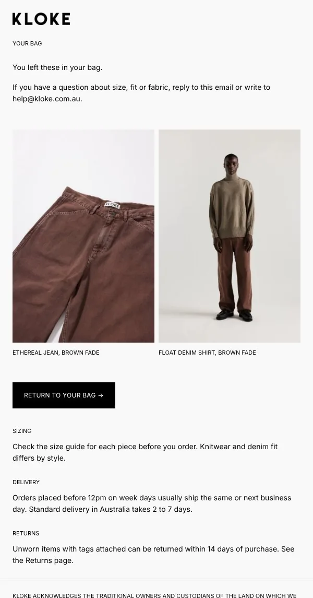
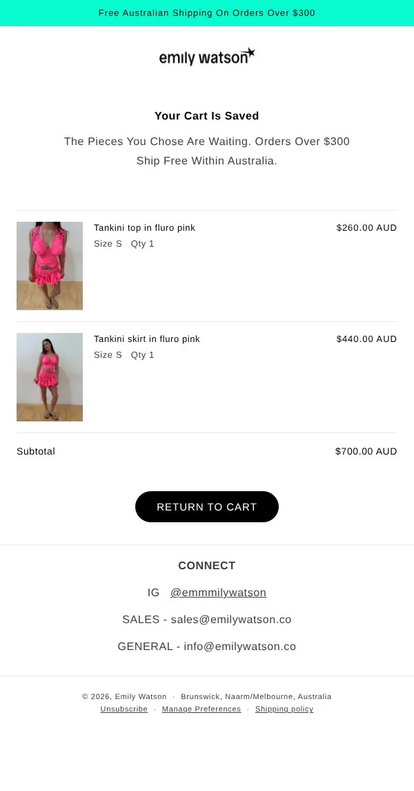
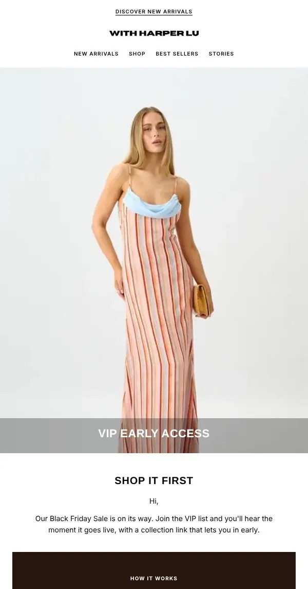

Otomatisasi Perjalanan Pelanggan
Flow sambutan, keranjang yang ditinggalkan, penelusuran yang ditinggalkan, pascapembelian, dan win-back.
Email marketing untuk brand fashion
Pelanggan Anda sudah ada di daftar. Saatnya mengubah lebih banyak dari mereka menjadi pembeli setia.
Kami merancang kampanye email strategis dan perjalanan otomatis yang membuat pelanggan lebih sering membeli, memulihkan keranjang yang ditinggalkan, dan mengubah pembeli sekali jadi pelanggan tetap.
Target kami: melipatgandakan rata-rata pendapatan email bulanan dalam enam bulan. Target yang terukur, bukan hasil yang dijamin.
Drop produk berikutnya, terjual dari kotak masuk · Flow sambutan yang mengonversi · Win-back yang membawa pembeli kembali · Kampanye terencana dalam kalender · Flow keranjang yang ditinggalkan yang membawa pelanggan kembali · Email pascapembelian yang mengajak pesanan berikutnya · Peluncuran yang membangun antusiasme · Pesan tersegmentasi untuk setiap pelanggan · Email yang mencerminkan brand dan produk Anda · Program lifecycle untuk fashion dan ecommerce · Pelaporan terhadap baseline yang disepakati
Masalahnya
Email peluncuran ditulis di menit terakhir tanpa teaser, urutan peluncuran, atau daftar tunggu yang tepat.
Email sambutan, keranjang yang ditinggalkan, dan pascapembelian sering dibiarkan begitu saja setelah pengaturan platform.
Kampanye dikirim kapan saja seseorang ingat, bukan mengikuti rencana musiman yang strategis.
Email layak mendapat perhatian yang sama seperti iklan berbayar dan toko Anda.
Layanan
Flow sambutan, keranjang yang ditinggalkan, penelusuran yang ditinggalkan, pascapembelian, dan win-back.
Peluncuran musiman, koleksi baru, restock, akses VIP, promo, dan kampanye diskon.
Formulir pendaftaran, pop-up, insentif sambutan, dan akuisisi pelanggan.
Pengaturan domain pengirim, pembersihan daftar, dan pemeriksaan penempatan di kotak masuk.
Segmentasikan daftar Anda dan uji A/B subject line, penawaran, konten, dan waktu kirim. Catat hasilnya dan terus tingkatkan.
Lacak pendapatan email, performa kampanye, konversi, pertumbuhan pelanggan, dan kesehatan daftar terhadap baseline yang disepakati.
Cara kami bekerja
Tinjau brand, toko, perjalanan pelanggan, dan performa email yang ada.
Identifikasi peluang dan susun roadmap lifecycle dan kampanye.
Tulis copy, desain email, dan bangun otomatisasi di platform klien.
Uji setiap email dan dapatkan persetujuan klien sebelum dikirim.
Tinjau performa, uji perbaikan, dan laporkan kemajuan setiap bulan.
Cara kami membangun
Membangun, mengirim, dan mengukur
Desain dan persetujuan
Setiap proyek dirancang di Figma dan diimplementasikan di Klaviyo. Anda tetap memiliki file dan akunnya.
Portofolio kami
Pilihan strategi email, otomatisasi lifecycle, kampanye, dan karya desain untuk brand fashion. Lihat tujuan proyek, pekerjaan yang dikirim, dan hasil yang dilaporkan. Hasil ditampilkan sebagaimana diberikan untuk setiap proyek; periode pengukuran dan metode atribusi dapat berbeda.


Proyek 1 · Lifecycle marketing
4 flow · 1 kampanye peluncuran · 16 email · open rate 30%


Proyek 2 · Lifecycle marketing
5 flow · 2 newsletter · 17 email · pendapatan flow sambutan 6× dibanding 90 hari sebelumnya


Proyek 3 · Katalog newsletter
34.000+ pelanggan · pertumbuhan pendapatan kampanye 580%+


Proyek 4 · Lifecycle dan kampanye
5 flow · 24 email · pertumbuhan pendapatan flow 154%


Proyek 5 · Copy kampanye dan sistem desain
25 pengiriman kampanye · pertumbuhan pendapatan pelanggan kembali 54%


Proyek 6 · Email kampanye
5 email kampanye · pertumbuhan pendapatan yang diatribusikan ke email 3×
Copywriting
| Tujuan bisnis | Keputusan copy | Penerapan | Yang kami ukur |
|---|---|---|---|
| Pesanan pertama | Penawaran sambutan yang jelas dan cerita brand | Sambutan Madre Natura: kode 10% setelah cerita | Konversi pesanan pertama |
| Jaga margin | Jawab soal harga dengan nilai, bukan diskon | Keranjang Madre Natura: bahan dan perbaikan. Kloke: tanpa diskon seluruh toko | Rata-rata nilai pesanan |
| Pulihkan checkout | Hilangkan keraguan soal ukuran, pengiriman, dan pengembalian | Keranjang Kloke; FAQ With Harper Lu | Tingkat pemulihan keranjang |
| Jual lebih banyak per pesanan | Copy pasangan dan cross-sell | With Harper Lu: Pasangkan dengan | Rata-rata nilai pesanan |
| Pembelian ulang | Email perawatan dan ucapan terima kasih yang mengajak pembelian berikutnya | Panduan perawatan Romeo Waiting; perawatan produk Kloke | Tingkat pembelian ulang |
| Pendapatan diskon, brand tetap terjaga | Subject line yang mengutamakan produk, tanpa kalimat tekanan | Emily Watson: 25 pengiriman, hanya label Diskon dan harga coret | Pendapatan per pengiriman |
| Kesehatan daftar | Win-back yang bertanya, lalu melepaskan | Romeo Waiting: “Masih mau kami tunggu?” | Tingkat win-back, berhenti berlangganan |
Pengukuran & hasil
Tidak ada metrik semu. Setiap angka diukur terhadap baseline Anda sendiri, sehingga Anda selalu tahu apakah email menghasilkan.
Target enam bulan
Baseline adalah rata-rata pendapatan email bulanan dari tiga bulan sebelum kerja sama dimulai. Baseline disepakati secara tertulis dengan klien pada kickoff, sehingga kemajuan diukur terhadap angka yang telah disetujui kedua pihak.
Hanya ilustrasi. Ini adalah target, bukan hasil yang dijamin.
Jika belum tercapai: kami terus bekerja tanpa biaya tambahan hingga target tercapai atau Anda memilih untuk berhenti.

Tentang founder
Ana · Founder, ConvertID
Menjalankan program email sejak 2022. Saat Anda bekerja dengan ConvertID, Anda langsung bekerja dengan Ana, dari strategi hingga pengiriman terakhir.
Saya percaya email marketing yang baik harus terasa sebagai perpanjangan alami dari brand, bukan sekadar pesan penjualan lain di kotak masuk seseorang.
Pendekatan saya memadukan wawasan pelanggan, copywriting yang matang, otomatisasi strategis, dan analisis performa untuk menciptakan pengalaman email yang membangun hubungan dan mendorong pendapatan.
Harga
Tiga paket, minimum tiga bulan, harga dalam dolar AS (AUD atas permintaan). Pilih yang sesuai dengan kalender dan target Anda.
US$1.500/ bulan
US$2.500/ bulan
Semua yang ada di Starter, ditambah:
US$4.000/ bulan
Semua yang ada di Growth, ditambah:
SMS tersedia sebagai add-on opsional dengan harga terpisah. Semua paket memiliki minimum tiga bulan.
Audit email
Berhenti menebak di mana pendapatan email Anda bocor. Anda mendapatkan laporan 12 halaman, panggilan tinjauan, dan lima perbaikan pertama yang diurutkan berdasarkan dampak.
US$750
Dikreditkan ke bulan pertama Anda jika Anda melanjutkan dalam 14 hari.
Diserahkan dalam lima hari kerja setelah akses diberikan.
Pertanyaan
Tidak. Kami bisa bekerja secara mandiri atau bersama tim internal Anda, mengambil alih strategi, flow, dan pelaporan dari beban mereka.
Klaviyo untuk toko Shopify dan WooCommerce. Platform lain dapat ditinjau selama audit.
Flow membutuhkan waktu untuk berkinerja, dan kalender kampanye membutuhkan satu siklus penuh agar dapat diukur dengan benar.
Akses ke platform email dan toko, aset brand, serta sekitar tiga jam dalam dua minggu pertama. Setelah itu, hanya persetujuan mingguan singkat yang dibutuhkan.
Setiap desain dan pengiriman disajikan untuk persetujuan. Tidak ada yang dikirim tanpa persetujuan klien.
Klien memiliki akun, desain, copy, dan data.
Hubungi kami
Pelanggan Anda sudah menyukai brand Anda. Mari ubah itu menjadi pesanan musim ini.
Kolom bertanda * wajib diisi. Kami membalas setiap pertanyaan.